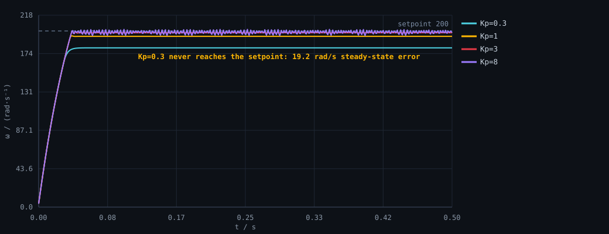
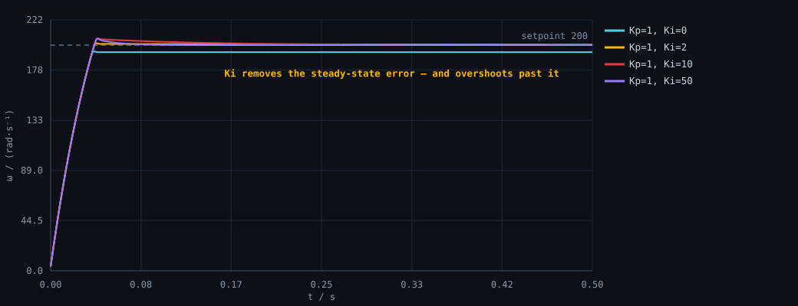
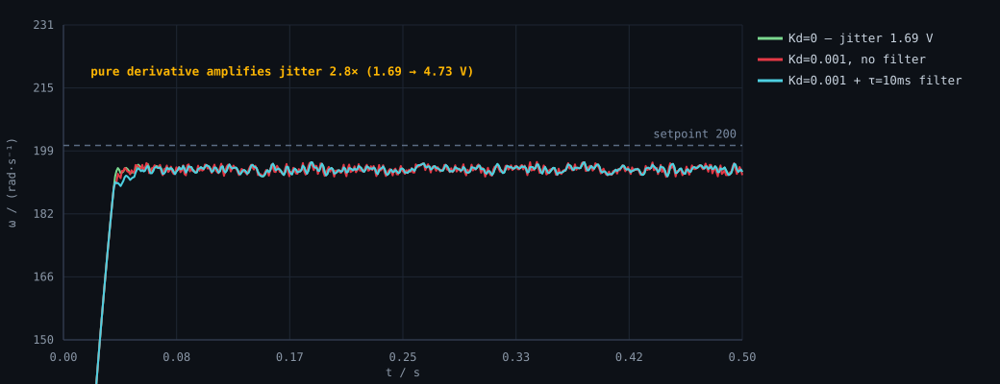

「Kp 调大响应快但会超调，Ki 消除稳态误差，Kd 抑制超调但对噪声敏感」——这句话我背过很多遍，但背下来不等于明白。我第一次真正搞懂，是在自己写的仿真里 把同一个参数从很小加到很大，然后把每一组的关键指标摊在表格里对比的时候。
这篇是我那份仿真的实验记录。下面出现的每个数字，都来自仓库里 code/06-pid-sim 的真实运行输出（本机 gcc 16.2 编译），对应的 CSV 一起在仓库里，你可以自己重跑核对。
一、为什么先在电脑上做，而不是等板子
三个理由，也是我在 sim.c 开头写下的：
- 效率：上板子一次只能试一组参数，改一次要重编译下载、大约 30 秒；18 组就是 9 分钟。仿真 18 组跑完不到 0.1 秒。
- 控制变量：仿真里被控对象是固定的，所以 Kp 改大之后性能变化一定来自 Kp，而不是「这次电池电压低了」或者「桌面不平」。这是做实验的基本功。
- 先扫范围再上机：仿真把参数的大致区间扫出来，上板子只需要在这个区间里微调。
二、实验设置（可核对）
被控对象是一台 12 V 小型直流电机的电枢 + 机械完整模型，不是随手凑的一阶惯性环节：
| 项目 | 取值 | 说明 |
|---|---|---|
| 电枢电阻 / 电感 | 1 Ω / 0.5 mH | 电气时间常数 τe = L/R = 0.5 ms |
| 反电动势 / 转矩常数 | ≈ 0.0318 (SI) | 空载约 300 rpm/V，国际单位制下 Kt = Ke |
| 转动惯量 / 粘性摩擦 | 5.5e-5 kg·m² / 1e-6 | 机械时间常数 τm = J·R/(Kt·Ke) ≈ 54 ms |
| 物理积分步长 | 20 µs | 必须远小于 τe = 0.5 ms，否则前向欧拉法会数值发散 |
| 控制周期 | 1 ms (1 kHz) | RM 常见的控制频率 |
| 目标转速 | 200 rad/s | 约 1910 rpm |
| 控制量限幅 | ±12 V | 对应电源电压；很多结论都源于这个限制 |
| 仿真时长 | 0.5 s / 500 步 | 足够看到稳态 |
实验规则只有一条：每组只改一个变量，其余与对照组完全一致。
三、只有 P：为什么它永远追不上目标
纯比例控制下，输出就是 u = Kp · e。转速越接近目标，误差越小，能给出的电压也越小——所以它必然停在某个「电压刚好够顶住摩擦和反电动势」的地方，永远差一截。

| 场景 | Kp | 上升时间 | 超调 | 稳态误差 | 调节时间 | 输出抖动 |
|---|---|---|---|---|---|---|
P_kp0.3 | 0.3 | 40 ms | 0 | 19.20 rad/s | — | 0 V |
P_kp1 | 1.0 | 32 ms | 0 | 6.18 rad/s | — | 0 V |
P_kp3 | 3.0 | 32 ms | 0 | 2.10 rad/s | 39 ms | 0 V |
P_kp8 | 8.0 | 32 ms | 0.85% | 1.21 rad/s | 444 ms | 9.20 V |
这张表里有两个我在写之前没想到的点：
- Kp 从 0.3 加到 8（26 倍），上升时间只从 40 ms 变成 32 ms 就再也不动了。原因不是「饱和了」这么简单——启动阶段误差高达 200 rad/s，
u = Kp·e无论 Kp 取 1 还是 8 都已经超过 12 V 被限幅顶住，此时电机就在以「电源能给的加速度」加速。能多快，由电源电压决定，不由 Kp 决定。 - Kp=8 时误差确实降到了 1.21 rad/s，代价是输出在稳态持续抖动（9.2 V/次采样，峰峰 19.9 V），调节时间从 39 ms 恶化到 444 ms。这就是「Kp 太大为什么会振」——增益高到一定程度，控制系统开始对每个小偏差都过度反应。
四、加上 I：稳态误差被消掉，代价是超调
积分项的做法是把误差累加起来：只要还有一点误差，积分项就继续涨，直到误差归零。所以积分是唯一能真正消掉稳态误差的项。

| 场景 | Ki | 超调 | 稳态误差 | 调节时间 |
|---|---|---|---|---|
PI_ki0 | 0 | 0% | 6.18 rad/s | — |
PI_ki2 | 2 | 0.87% | −0.48 rad/s | 39 ms |
PI_ki10 | 10 | 2.96% | −0.08 rad/s | 74 ms |
PI_ki50 | 50 | 2.89% | −0.0000 rad/s | 48 ms |
稳态误差列里 Ki=2 和 Ki=10 都是负数，意思是转速超过了目标值。这不是错误：积分项在误差还很小的时候已经攒下了一些「存货」，等误差反向它才会慢慢花掉。这正好解释了超调——超调就是积分项的存货在买单。
Ki=50 时误差已经小到 0.0000（比 Ki=10 的 0.08 又小两个数量级）。但注意它并没有更糟的超调（2.89% vs 2.96%）——因为这一组开着积分限幅（抗饱和）。把限幅关掉会怎样？那是另一篇的故事，也是这个仿真里最戏剧性的一组数据：超调直接从 1% 干到 44%。
五、加上 D：抑制超调，但把噪声一起放大
微分项看的是误差变化的快慢：接近目标时变化越快，它就越用力往回压，所以能压超调。固定 Kp=1 / Ki=10（这组本身超调 2.96%，才看得出 D 的作用），把 Kd 加上去：
| 场景 | Kd | 超调 | 相对无 D 的变化 |
|---|---|---|---|
PID_kd0 | 0 | 2.959% | — |
PID_kd0005 | 0.0005 | 2.603% | −12.0% |
PID_kd001 | 0.001 | 2.550% | −13.8% |
PID_kd002 | 0.002 | 2.486% | −16.0% |
看起来只是小幅改善——因为在这个理想模型里本来就没有噪声，也没有量化误差。微分项的真面目要在有噪声的时候才露出来。于是我又补了一组实验：给测量值加 2 rad/s 的随机噪声（模拟真实编码器 + 干扰），基准特意取 Ki=0，这样纹波里就不会混进「积分项对噪声随机游走」的成分，剩下的差异全是微分项一个人的锅。

| 场景 | Kd | τ滤波 | 输出抖动 | 稳态波动峰峰 |
|---|---|---|---|---|
noise_nod | 0 | — | 1.69 V | 5.48 V |
noise_d | 0.001 | 0（不滤波） | 4.73 V ↑2.8× | 12.85 V |
noise_d_f2 | 0.001 | 2 ms | 2.50 V | 7.48 V |
noise_d_f10 | 0.001 | 10 ms | 1.88 V ≈ 无 D 水平 | 5.85 V |
为什么加了 D 会抖成这样？算一下量纲就明白了：
// 微分先行：对测量值微分（pid.c） d_raw = -kd * (measurement - prev_measure) / dt; // Kd = 0.001，dt = 1 ms ⇒ 除以 dt 等于把测量值的差放大 1000 倍 // 编码器噪声 2 rad/s 的抖动 → 微分项上变成 0.001 × 2 / 0.001 = 2 V 级别的输出抖动
解决办法是在微分项后面串一个一阶低通（y[k] = y[k-1] + α·(x[k] − y[k-1])，α = dt/(τ+dt)，一个乘加就够，非常适合单片机）。τ=10 ms 时抖动回落到 1.88 V，基本回到不加微分时的水平，而微分抑制超调的好处基本保留。代价是相位滞后——τ 越大越平滑、滞后越多，所以不能一直加大，经验取采样周期的 3~10 倍。
六、三个结论
- P 决定「追得多狠」，但追不到底。稳态误差一定存在，且 Kp 加到一定程度后上升时间不再改善——那部分是由电源电压和执行器上限决定的。
- I 是唯一能消掉稳态误差的项，它的代价是超调。超调的本质是积分项在误差反向之前攒下的「存货」，所以抗饱和（积分限幅）才是工程上必须做的事。
- D 抑制超调，但它同时是一个噪声放大器（增益 ∝ 1/dt）。所以「先微分、再低通」几乎是标配，不是可选项。
七、我自己踩的两个坑
- 物理步长不能偷懒。一开始我用
dt = 1 ms做物理积分，结果仿真直接发散。原因是前向欧拉法条件稳定，要求dt < 2·τe；本例 τe = L/R = 0.5 ms，dt = 1 ms正好踩在稳定边界上。改成 20 µs 后一切正常。数值方法的稳定条件，是写仿真之前就该算的东西。 - C99 里浮点表达式不是整数常量。我写了
#define N_STEPS (T_END / CTRL_DT)，用它当数组维度时报 storage size isn't constant。这个坑是真编译的时候才发现的——所以这份代码我坚持真编译真运行，不写「伪代码片段」。
八、自己验证一遍（约 3 分钟）
git clone https://github.com/shisisishi/stm32-learning-notes cd stm32-learning-notes/code/06-pid-sim gcc -O2 -std=c99 -Wall -Wextra -o pidsim sim.c pid.c plant.c -lm ./pidsim # 核对：data/metrics.csv 里 P_kp0.3 那一行的 sse 应该是 19.2034 # data/metrics.csv 里 windup_off 的 overshoot_pct 应该是 44.04
g_seed = 12345），不依赖 rand()，所以同一份代码在任何平台跑出来应该完全一致。如果你跑出来的数字和这里不一样，那说明我哪一步写错了——欢迎直接告诉我。